HCQDL_notes
Semiconductor Defect Detection by Hybrid Classical-Quantum Deep Learning
1 Introduction
Three main types of defects 晶片缺陷的三种主要类型
- wafer (晶片) defect map 晶片缺陷图
- defect pattern 缺陷图案
- hotspot （缺陷）热点
wafer defect map 晶片缺陷图
visualize the distribution of defect patterns & identify potential process and tool issues.
看在哪儿，全局，定位问题大致原因
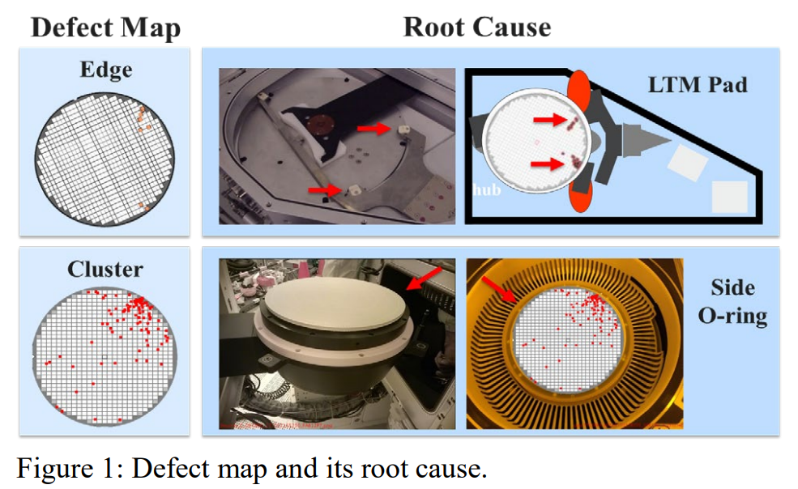
defect pattern
the unit that composes the wafer map.
Each defect pattern signals the root cause
使用更高分辨率工具获得，从分布找出根本原因，局部
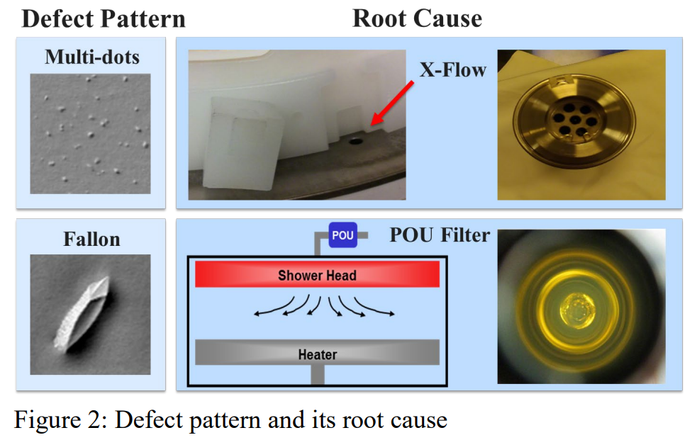
hotspot
the region of mask layout patterns where failures are more likely to happen.
Hotspot detection is used to check potential circuit failures at the post optical proximity correction (OPC](https://zhuanlan.zhihu.com/p/671573650))) stage when transferring designed patterns onto silicon wafers.
更容易坏的地方（比如晶体边缘）
热点检测是指在平版印刷过程中，从版面中找出可能导致印刷性问题的热点的过程。
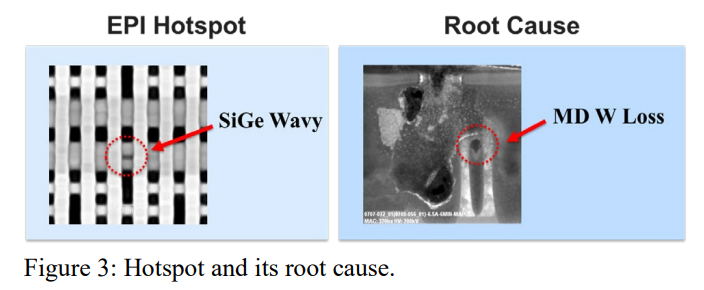
HCQDL (Hybrid Classical-Quantum Deep Learning)
DL有用，但结果具有概率性&高维数据计算复杂，QC可以改善这些问题，所以提出HCQDL，由经典层和量子层组成。
Contributions
- 提出了“自扩散-注意力块”网络架构，能够更有效的提取特征。
- 提出了具有不同表达能力和纠缠能力的参数化量子电路并比较、评价。
- 为半导体缺陷检测提供了基于电路的混合量子经典深度学习的未来发展路线图。
2 Related works
DLDR(defect learning and defect review 缺陷学习和缺陷评估) & quantum machine learning backgrounds.
2.1 DLDR
Wafer Defect Map
很多人用深度学习来通过晶片缺陷图得到晶片是好是坏，if坏→缺陷类型，这也是主流方法。
我们想结合dl和qc的优势来做。
defect pattern
一些越来越好的识别
hotspot
简单介绍了一些热点检测方法的效果
2.2 Quantum machine learning
量子计算发展，最有前途的应用之一：量子机器学习（QML）
QML最新进展是由一类成为混合量子经典变分算法（hybrid quantum-classical variational algorithms）的算法主导的。
3 Method
HCQDL的组成：
- 经典层
- 量子层
- 全连接层
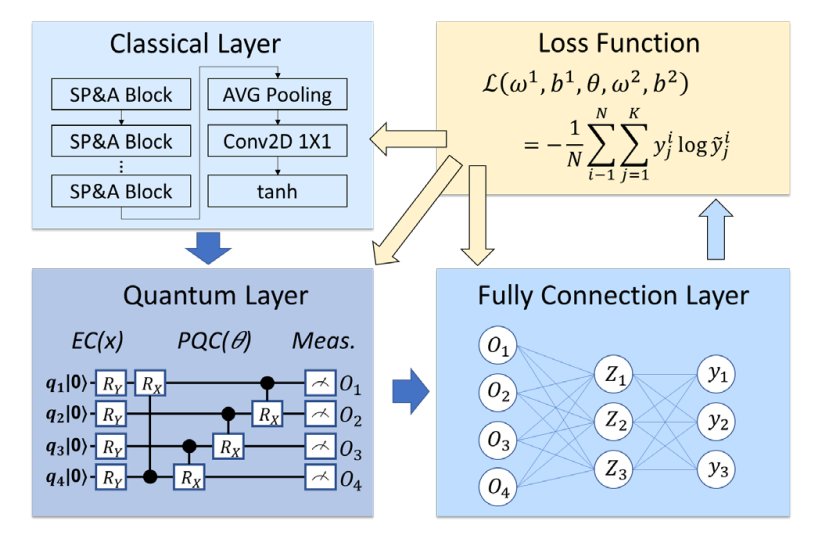
一些pre-knowledge
马尔可夫链：简述马尔可夫链
self-attention：自注意力机制 (Self-attention)
1×1卷积：CNN中神奇的1x1卷积
Bottleneck Transformer：Bottleneck Transformers for Visual Recognition
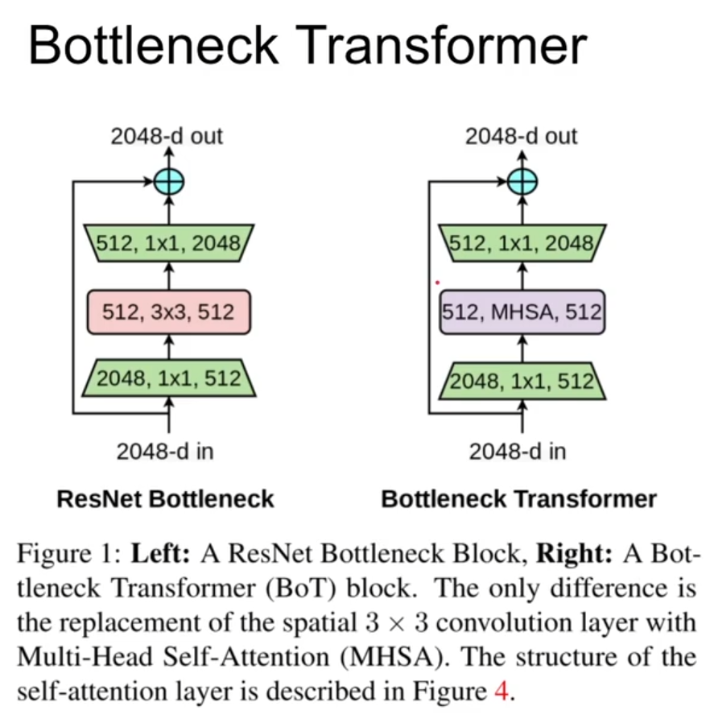
小数的二进制↔十进制：小数的二进制与十进制互转
酉门、旋转门：
酉矩阵：厄米共轭矩阵等于逆矩阵的矩阵。在量子计算中，所有的门操作都必须是酉门，以保证概率的总和为1，即保证量子态的归一性）
旋转门是一类特定的酉门，通常用于在量子比特上执行旋转操作。旋转门的具体形式通常涉及到参数，这些参数控制了旋转的角度。
泡利矩阵：
泡利矩阵（Pauli matrices）是一组由物理学家Wolfgang Pauli引入的特殊矩阵，它们在量子力学中的描述中起到了重要的作用。这些矩阵是3x3的厄米（Hermitian）矩阵，也是单位矩阵和泡利矩阵的线性组合。这组矩阵通常用来表示自旋和其他角动量的算符。
泡利矩阵一般表示为：
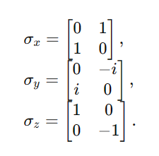
这里，σx、σy、σz 分别是Pauli X、Pauli Y和Pauli Z矩阵。它们满足以下性质：
- 厄米性：每个泡利矩阵都是厄米矩阵，即矩阵的共轭转置等于它本身。
- 幺正性：每个泡利矩阵的平方等于单位矩阵，即$σ_i^2$=I，其中 i 表示 X、Y 或 Z。
这些矩阵在量子力学中广泛应用，特别是在描述自旋和角动量时。它们也在量子计算中的一些基本门操作中发挥着关键作用。例如，X、Y、Z 旋转门通常用这些矩阵表示，而 Hadamard 门也可以用它们的组合来表示。
Constructive and Destructive Interference：Constructive and Destructive Interference
Kronecker 乘积：也被称为张量积，通常用符号⊗表示。在线性代数和量子力学中，Kronecker 乘积是一种矩阵运算，用来组合两个矩阵以形成一个更大的矩阵。
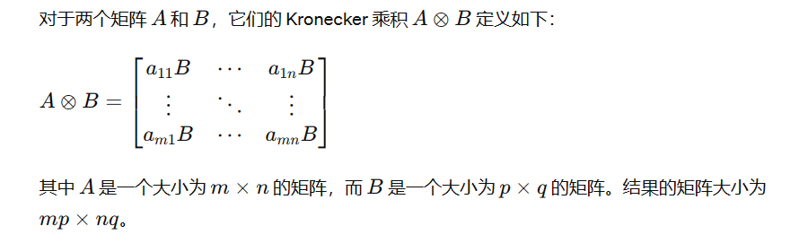
CNOT门：CNOT门（Controlled NOT门）是量子计算中的一种常见的两量子比特门，用于实现量子比特之间的相互作用。它是一个受控门，其中一个量子比特称为控制比特（Control qubit），而另一个是目标比特（Target qubit）。CNOT门的作用是根据控制比特的状态来进行操作。具体来说，如果控制比特处于状态 ∣1⟩∣1⟩，那么目标比特上的 X 门操作（NOT门）将被应用。如果控制比特处于状态 ∣0⟩∣0⟩，则目标比特上的操作不发生变化。CNOT门的矩阵表示为：

例：
考虑一个两量子比特系统，初始状态为 ∣ψ⟩=∣0⟩⊗∣0⟩（控制比特为 ∣0⟩，目标比特为 ∣0⟩）。应用 CNOT 门后，系统的状态变为：
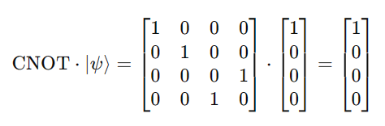
在这里，当控制比特为 ∣0⟩ 时，目标比特的状态不变。
现在，考虑初始状态为∣ψ⟩=∣1⟩⊗∣0⟩（控制比特为∣1⟩，目标比特为∣0⟩）。应用 CNOT 门后，系统的状态变为：
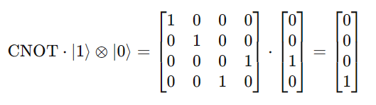
这意味着目标比特的状态发生了交换，变为∣1⟩。
在电路图表示为：
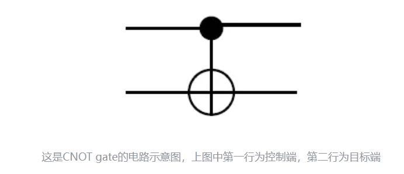
Ablation Study：在深度学习中，Ablation Study 的典型方法是通过逐步去除模型的某些特征、层或模块，然后观察模型性能的变化。通过这样的实验设计，研究人员可以了解模型的哪些部分对任务的关键，哪些部分对性能起到辅助作用，以及哪些部分可能对模型性能贡献较小或负面。
3.1 经典层
由SP&A（self-proliferation and self-attention）块实现，用于有效提取特征映射。
- self-proliferation block 自扩散块：利用一系列线性变换，以更低的计算成本生成更多的特征映射。
- self-attention block 自注意力块：从生成的特征中学习大量关于长期依赖关系的信息。
3.1.1 Self-Proliferation Block 自扩散块
- 少量的卷积操作→n个特征映射
- 通过线性变换复制一遍→再得到n个特征映射
3.1.2 Self-Attention Block 自注意力块
通过聚合其他位置的信息来加强查询位置的特征。
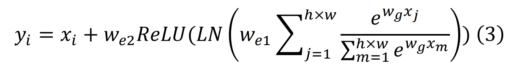
公式理解
- xi：输入实例的特征映射
- h和w：输入x的高和宽
- we1和we2：1×1卷积，用于瓶颈变换
- wg：全局注意力权重
- LN：归一化层，过滤冗余信息，并对获取的上下文信息进行细化（？）
3.1.3 Self-Proliferation-and-Attention Block 总的来说
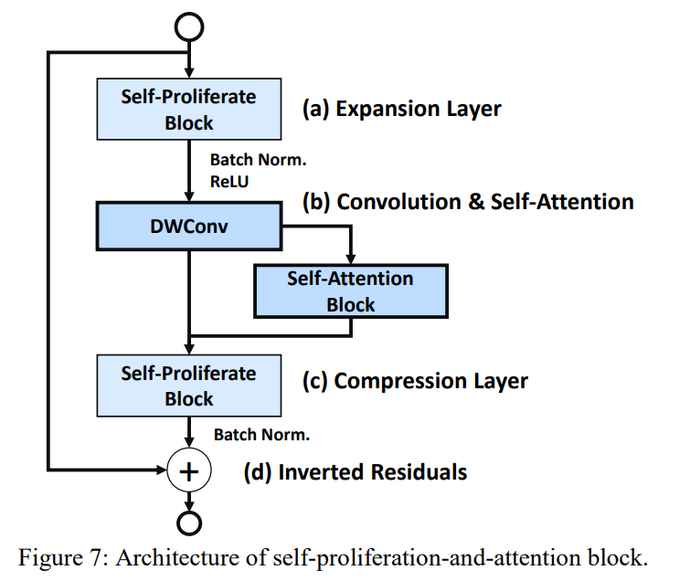
3.2 量子层
由采用连续变量结构的多样的量子电路组成，对电磁场振幅等连续自由度的量子信息进行编码。
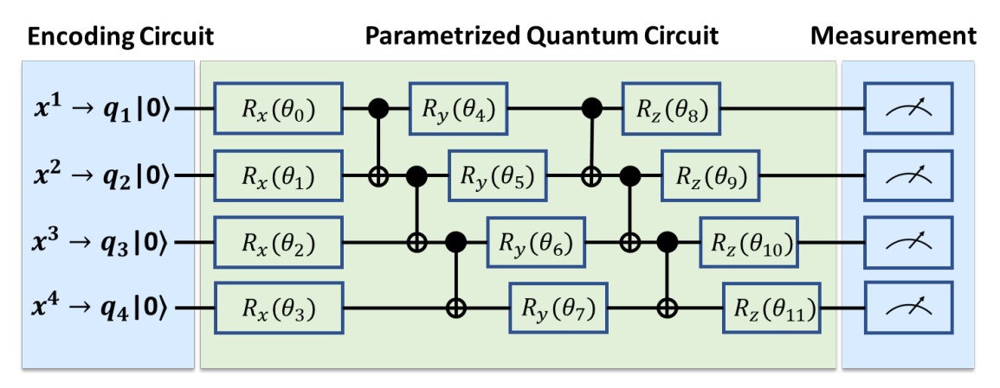
- 编码电路
- 参数化量子电路（PQC）
- 测量
3.2.1 编码电路
将经典数据编码为量子位状态（希尔伯特空间的物理状态），用于量子计算。
Basis Encoding 基编码
先转换为二进制，再对应得到（如直接拼接）量子编码。
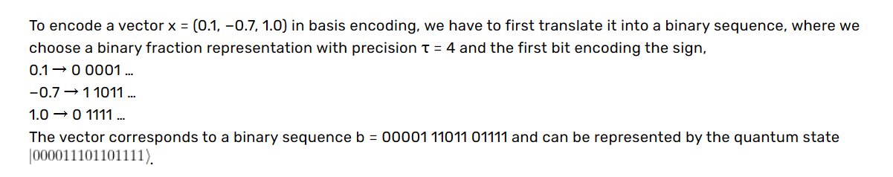
Amplitude Encoding 振幅编码
振幅编码是一种利用量子叠加原理的编码方式。在这种编码中，信息通过量子态的振幅来表示。一个量子比特可以处于一系列可能的状态的线性组合，每个状态对应一个振幅（这些振幅可以是复数）。
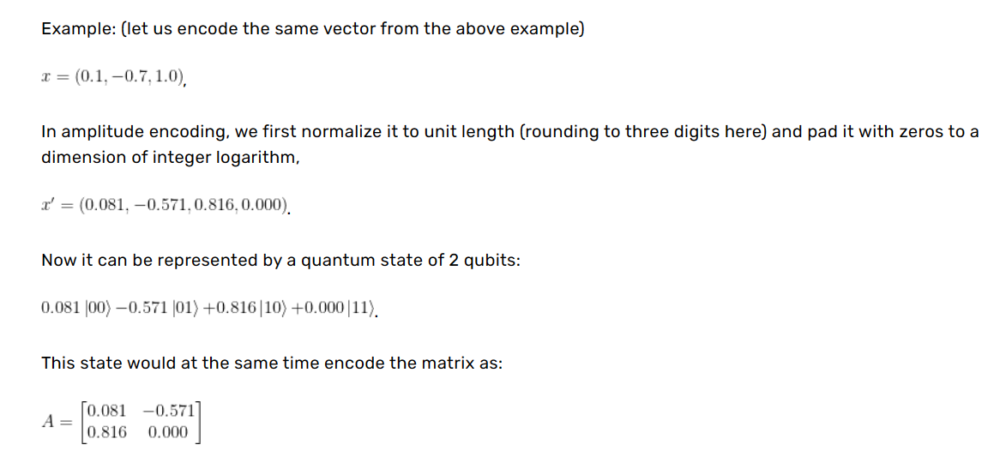
Angle Encoding 角度编码
使用角度来表示信息，将量子比特的可能状态对应到球坐标系中。
考虑一个量子比特，其状态可以用如下形式表示：
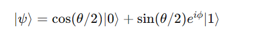
其中，θ 是极角，ϕ 是方位角。这个状态可以在Bloch球上找到对应的点（Bloch球是一个球面，其表面上的点对应于量子比特的可能状态）。
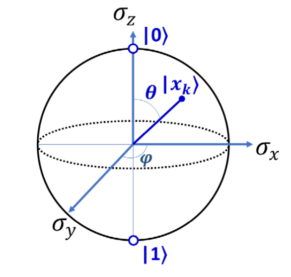
3.2.2 参数化量子电路
参数化量子电路是由固定深度的参数化门组成的量子电路。
这些电路的自由参数：量子态的旋转角度。
本工作使用了量子电路，用不同的随机参数重复多次，而不是使用大而复杂的经典神经网络。
参数化量子电路也由一个量子比特门和可控非门(Controlled NOT门)组成。在PQC中也可以使用一些更复杂的门，这些门可以拆解为一个量子比特门和CNOT门。
一般来说，一个n量子比特的PQC可以写成：
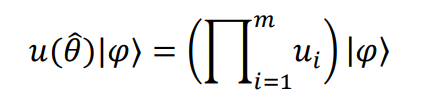
- $\varphi$：代表数据编码后的初始量子状态
- m：量子门数量
- $\theta$：参数集 {𝜃0, 𝜃1,… 𝜃𝑘}
- k：参数总数
- u($\theta$)：一系列酉门
上面的u($\theta$)可表示为旋转门的形式：
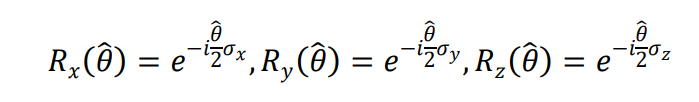
$\sigma_x$、$\sigma_y$、$\sigma_z$ 是泡利矩阵。
通过调整参数 θ，可以优化输出态，以逼近所需的量子态。
为了在附加非线性操作之前实现更好的量子比特纠缠，该模型对有 n 量子比特 PQC 设置 n 个重复层，即通过多次应用参数化电路的层以增强量子比特之间的纠缠效果。
在不同问题背景下，通过优化参数，PQC 可以试图逼近任意的量子态。
为了通过协调量子态的干涉效应来实现计算速度的提升，该模型采用了包含 m 个旋转门 Rx 的 n 量子比特 PQC：
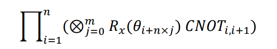
3.3 全连接层
从PQC中得到所有特征后，将它们输入到一个全连接（FC）层中。
使用softmax激活函数→FC层的输出将是一个概率分布，概率分布的第 i 项表示了该数据点属于第 i 类的概率。
通过计算预测标签与实际标签之间的累积距离作为待优化的损失函数来预测实际标签。具体而言，对于每个样本，系统会进行预测并获得一个预测标签，然后，通过计算预测标签与实际标签之间的距离，并将这些距离累积起来，形成了损失函数。
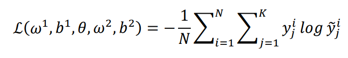
- w1、b1是经典层的参数
- $\theta$ 是量子层参数
- w2、b2是全连接层参数
重复上述过程已得到最优结果。
4 Results
4.1 Experiment Circuits
在深度学习中，将数据转换为更高维度的特征空间是非常有用的。
在量子计算中，采用两种策略来生成更高维度特征：增加纠缠、使用更多的量子比特。
然而，由于当前量子计算机研究处于早期阶段，可用的量子比特数量有限→本工作在四量子比特电路系统上采用不同的纠缠策略来验证其方法。
同时，还使用了多种量子电路设计。
4.2 Ablation Study
使用不同电路、不同编码方式进行了消融实验，发现如下：
- 电路5和电路6的比特排布是全连通图→拥有良好的表达能力和纠缠能力→无论半导体缺陷检测任务如何，电路5和电路6的网络模型都具有较高的精度。
- 有着可控Z旋转（CRz）门的电路5和电路16表现优于电路6和电路17，这是因为 CRz 操作在纠缠块中相互对易，因此由 CRz 门组成的有效酉操作可以用较少的唯一生成项来表示，这些项少于这些门的参数数量。
- 没有任何控制旋转门的基础电路在四个分类任务中的准确性最低。 这表明，如果要设计参数化量子电路（PQC）以增加可表达性，最好是插入单比特门，将受控门旋转轴偏离控制轴。
4.3 Experiment Results
效果比之前的好。
5 Conclusion
量子深度学习的创新性
实验旨在突出量子深度学习引入的新特性，包括典型 CNN 结构中卷积层的泛化能力、在半导体缺陷数据集上使用量子电路的能力，以及参数化量子电路引入的特征的潜在用途。
实验结果表明量子框架优于现有深度学习技术
研究的实验结果显示，提出的量子框架在半导体缺陷检测任务上表现出色，优于现有的深度学习技术。
对于量子优势的期望
基于最近的进展，研究者合理地认为在未来 5-10 年内可以实现量子优势。量子计算机有望提供快速的线性代数处理能力，这理论上能够实现多项式加速，从而允许核方法处理大数据，而不依赖于近似和启发式方法。
未来挑战和发展方向
提到了一些未来需要解决的问题，如如何选择参数化电路、如何选择与输入数据混合的随机数，以及如何优化量子比特的数量以获得良好的性能。还强调了将许多现有的深度学习算法转化为混合经典-量子深度学习的潜在价值，以充分利用新特性，如纠缠、叠加和并行计算。
希望证明量子机器学习的潜力
表达了对量子机器学习能够为半导体缺陷检测提供令人满意的解决方案的信心。